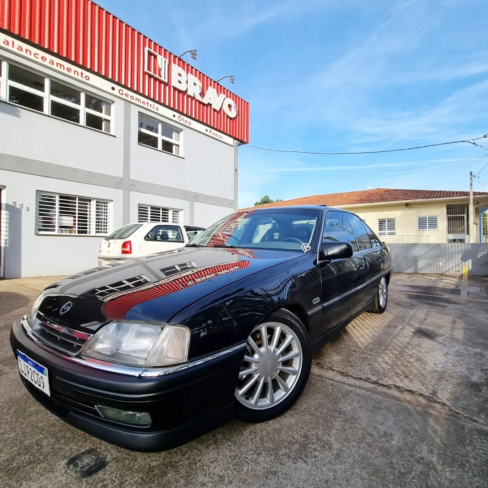
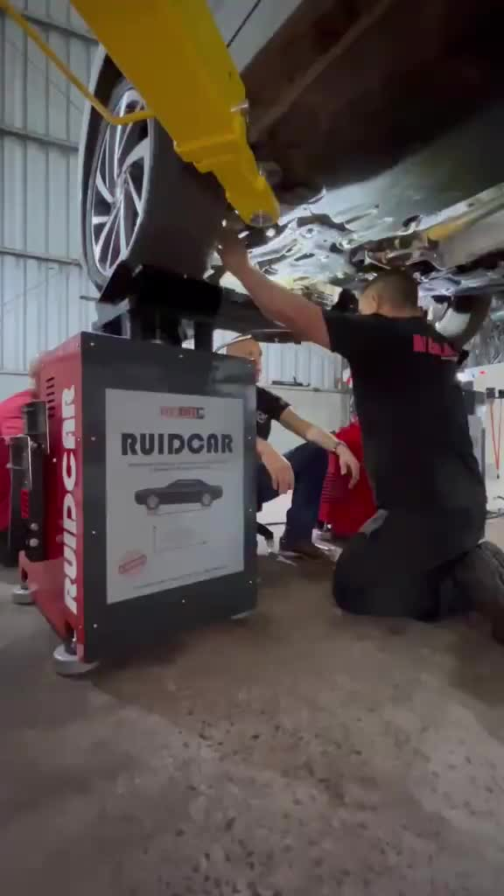
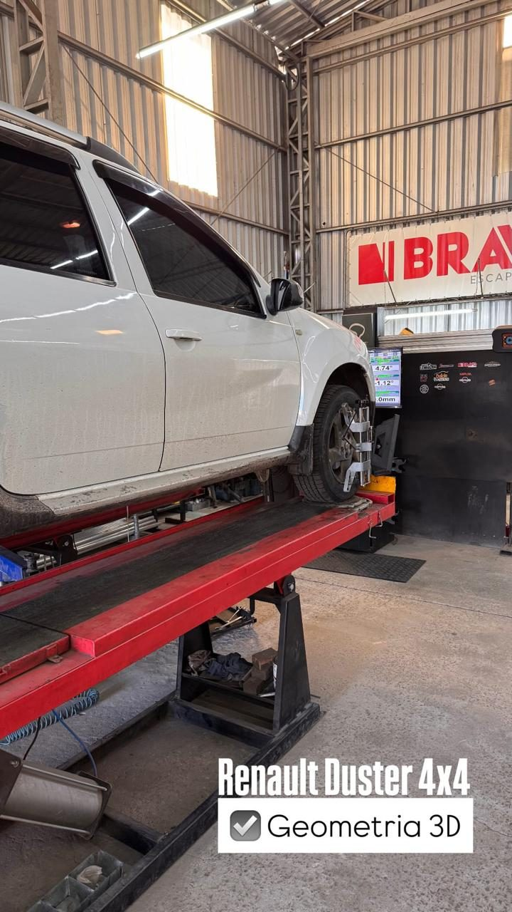
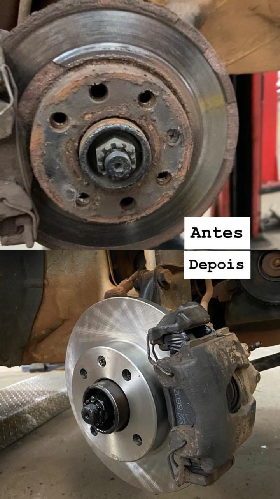
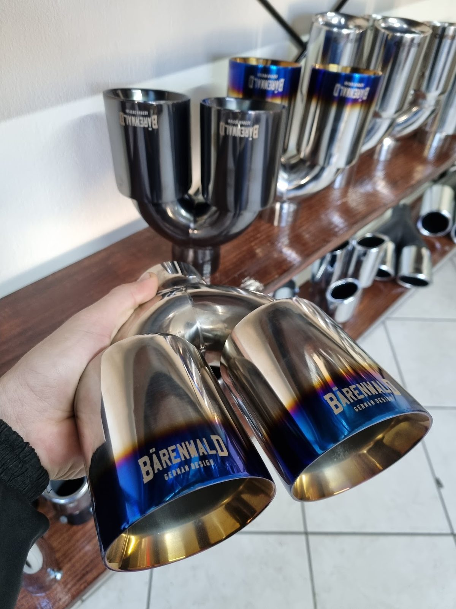
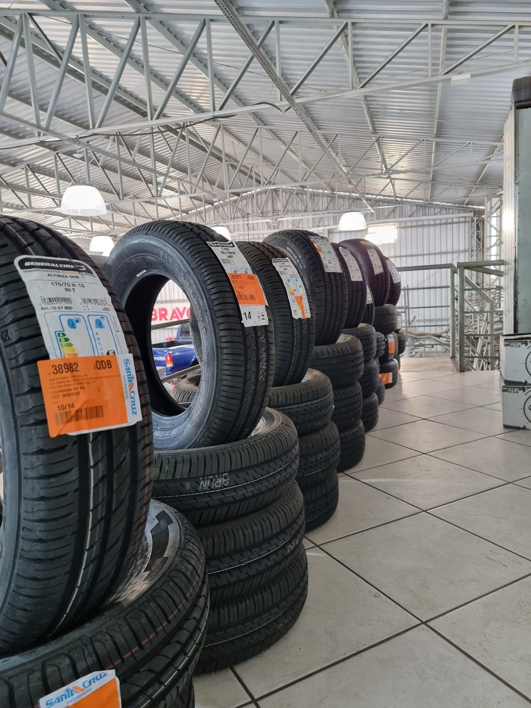
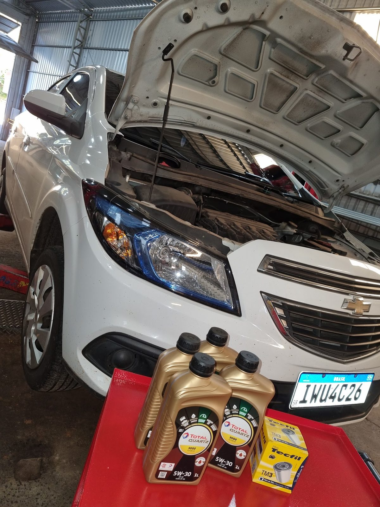
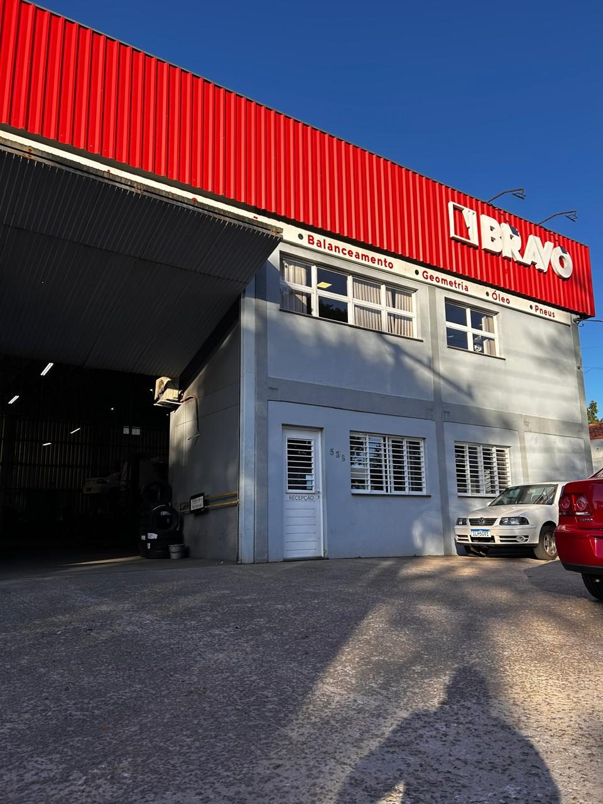

Oficina mecânica em Cachoeira do Sul · suspensão, direção e freios
Seu carro
fala.
A gente
escuta.
A Bravo Auto Center é uma oficina mecânica especializada em suspensão, direção e freios, com diagnóstico de precisão para trocar só a peça que realmente precisa.
4,7 · 141 avaliações no Google
A única Ruidcar da região está aqui.
O problema clássico: o carro estala, range ou bate rodando, mas quando sobe no elevador o barulho some. Sem o peso do carro, as peças da suspensão se acomodam, a folga se fecha e o defeito se esconde.
A Ruidcar resolve isso. Com o carro suspenso, ela reproduz o esforço da rodagem em diferentes condições de pista. O ruído volta a aparecer, agora isolado e localizável, com o mecânico embaixo do carro. Em vez de trocar peças por tentativa, a oficina mecânica aponta exatamente o que está com defeito.
- 01 O carro sobe no elevador sobre as plataformas da Ruidcar.
- 02 A máquina simula buracos, lombadas e piso irregular, com o carro parado.
- 03 O ruído aparece e é localizado peça por peça.
- 04 Você aprova o orçamento sabendo exatamente o que precisa trocar.
Suspensão, direção e freios: o que mantém o carro no controle.
São os três sistemas que mais pesam na segurança e os que mais sofrem com o calçamento e as estradas da região. É neles que a nossa oficina mecânica concentra equipamento, experiência e atenção.

Suspensão e amortecedor
Amortecedores, molas, bandejas, bieletas, pivôs e buchas. Diagnóstico na Ruidcar para achar a folga que o elevador esconde.
Ver suspensão →
Direção
Folga no volante, barulho ao esterçar, volante pesado ou torto. Terminais, barras axiais, caixa de direção e alinhamento no mesmo lugar.
Ver direção →
Freios e ABS
Pastilhas, usinagem de disco, freio a tambor, sangria e diagnóstico de ABS com scanner, inclusive em carros recentes.
Ver freios →Manutenção completa num autocenter só.
Alinhamento e balanceamento
Geometria 3D com leitura dos ângulos de fábrica e balanceamento das rodas. É o complemento natural de qualquer serviço de suspensão ou direção.
Ver alinhamento →Escapamento e solda em inox
Troca de traseiro, intermediário e flexível, solda e fabricação em aço inox e ponteiras esportivas, feitas na própria oficina.
Ver escapamento →
Pneus e TPMS
Todas as marcas, com as medidas mais procuradas em estoque e reposição de um dia para o outro. Montagem, rodízio e sistema TPMS.
Ver pneus →
Troca de óleo e filtros
Óleo original Volkswagen e ACDelco GM, Petronas, Elf, Shell Helix, Mobil e Lubrax, sempre na especificação do manual.
Ver óleos →
Uma oficina mecânica que mostra antes de trocar.
A Bravo Auto Center nasceu ligada ao escapamento — o letreiro antigo ainda dizia "Bravo Escapamentos" — e cresceu até virar o autocenter que é hoje, no bairro São José, em Cachoeira do Sul. O que não mudou foi o jeito de trabalhar: avaliar com calma, mostrar a peça ao cliente e só então orçar.
Essa postura ficou mais forte quando trouxemos a Ruidcar. Barulho de suspensão é a queixa mais comum de quem procura uma oficina mecânica, e também a mais difícil de resolver, porque o defeito costuma sumir quando o carro sobe no elevador. Com a máquina, o mecânico ouve o ruído acontecer e aponta a peça certa. Para você, isso significa orçamento mais curto e menos dinheiro em peças que não eram o problema.
O mesmo vale para a parte eletrônica. Os carros mudaram, e uma oficina mecânica que atende carros atuais precisa ler o que o computador de bordo registra. Temos scanner automotivo atualizado para diagnosticar ABS, sensores e luzes de alerta no painel.
O que você encontra aqui
- Única Ruidcar da região para diagnóstico de ruídos
- Especialidade em suspensão, direção e freios
- Geometria 3D e balanceamento no mesmo atendimento
- Scanner atualizado para carros recentes
- Pneus de todas as marcas, com reposição rápida
- Peças de qualidade e orçamento antes de qualquer serviço
Como funciona o atendimento
- Você conta o problema. Pelo WhatsApp, por telefone ou no balcão. Quando o assunto é barulho, um vídeo curto com o som já adianta bastante o diagnóstico.
- A gente avalia com o carro no elevador. Inspeção visual, Ruidcar para ruídos de suspensão e direção, scanner para falhas eletrônicas e medição de discos e pneus quando o caso pede.
- Você recebe o orçamento antes. Explicamos o que encontramos, mostramos a peça gasta e separamos o que é urgente do que pode esperar. Nenhum serviço começa sem a sua aprovação.
- Serviço feito, carro conferido. Depois do reparo, refazemos o teste — na Ruidcar, no scanner ou na geometria — para garantir que o problema foi resolvido de verdade.
É assim que uma oficina mecânica deveria funcionar: sem susto no valor final e sem troca de peça por tentativa. Esse cuidado aparece nas avaliações de quem já passou por aqui.

Avaliações de clientes no Google
Ótimo atendimento.. serviço de confiança ...
Atendimento diferenciado. Não é uma oficina comum, o serviço é muito superior. Peças de qualidade, atendimento excelente e preço justo. Recomendo demais!!
Agilidade e bom atendimento. Resolveram rápido o problema do meu veículo.
O pessoal trabalha muito bem. Peças de qualidade, serviço rápido e preço justo.
Atendimento sensacional. Possui mão de obra e preço das peças com um valor acessível.
É de confiança! Recomendo
Serviços de suspensão, surdinas e freios com preços justos e serviço de qualidade
Prestação de serviço rápida e de qualidade, serviço seguro e um ótimo lugar para a manutenção do seu carro na área de escapamentos.
Serviço de qualidade com preço justo.
A melhor auto center de Cachoeira. Pessoas íntegras, que fazem um trabalho impecável e tem um atendimento ótimo. Produtos de qualidade, serviços muito bem feitos. Pra mim e pra minha família, nota 1000... Confiança e qualidade definem.
Perguntas sobre a oficina mecânica
O que a Bravo Auto Center faz?
Somos uma oficina mecânica e autocenter com foco em suspensão, direção e freios. Também fazemos alinhamento 3D, balanceamento, pneus de todas as marcas, escapamento com solda em aço inox e troca de óleo com óleo original de montadora e as principais linhas sintéticas.
O que é a Ruidcar e por que ela faz diferença?
É um equipamento que simula a rodagem do carro com ele suspenso no elevador. O barulho que some quando o carro sobe volta a aparecer na frente do mecânico, e a peça com folga é localizada com precisão. Somos a única oficina mecânica da região com Ruidcar.
Vocês atendem carros novos, com sistemas eletrônicos?
Sim. Temos scanner automotivo atualizado, que lê os modelos mais recentes. Usamos para diagnosticar ABS, sensores e luzes de alerta no painel, e trabalhamos também com o sistema TPMS de pressão dos pneus.
Preciso agendar para levar o carro?
Não é obrigatório, mas ajuda. Chamando antes pelo WhatsApp, a gente já sabe o que esperar, separa o horário e você evita fila. Para diagnóstico de barulho na suspensão, vale mandar um vídeo com o som.
Vocês fazem conserto de pneu furado?
Não fazemos serviço de borracharia. Trabalhamos com venda e montagem de pneus, balanceamento, rodízio, alinhamento e sistemas TPMS.
R. Aparício Borges, 538
São José · Cachoeira do Sul, RS
Nossa oficina mecânica fica no bairro São José, com fácil acesso pelo centro. Atendemos motoristas de Cachoeira do Sul e de cidades vizinhas, principalmente para o diagnóstico na Ruidcar.
| Segunda a sexta | 08h–12h · 13h30–17h30 |
|---|---|
| Sábado | 08h–12h |
| Domingo | Fechado |